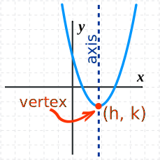
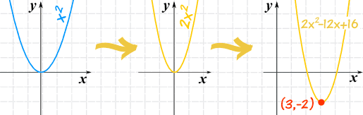
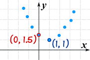

Graphing Quadratic Equations

A Quadratic Equation in Standard Form
(a, b, and c can have any value, except that a can't be 0.)
Here is an example:

Graphing
You can graph a Quadratic Equation using the Function Grapher, but to really understand what is going on, you can make the graph yourself. Read On!
The Simplest Quadratic
The simplest Quadratic Equation is:
f(x) = x2
And its graph is simple too:

This is the curve f(x) = x2
It is a parabola.
Now let us see what happens when we introduce the "a" value:
f(x) = ax2

- Larger values of a squash the curve inwards
- Smaller values of a expand it outwards
- And negative values of a flip it upside down

|
Play With ItNow is a good time to play with the |
The "General" Quadratic
Before graphing we rearrange the equation, from this:
f(x) = ax2 + bx + c
To this:
f(x) = a(x-h)2 + k
Where:
- h = −b/2a
- k = f( h )
In other words, calculate h (= −b/2a), then find k by calculating the whole equation for x=h
But Why?

The wonderful thing about this new form is that h and k show us the very lowest (or very highest) point, called the vertex:
And also the curve is symmetrical (mirror image) about the axis that passes through x=h, making it easy to graph
So ...
- h shows us how far left (or right) the curve has been shifted from x=0
- k shows us how far up (or down) the curve has been shifted from y=0
Lets see an example of how to do this:
Example: Plot f(x) = 2x2 − 12x + 16
First, let's note down:
- a = 2,
- b = −12, and
- c = 16
Now, what do we know?
- a is positive, so it is an "upwards" graph ("U" shaped)
- a is 2, so it is a little "squashed" compared to the x2 graph
Next, let's calculate h:
And next we can calculate k (using h=3):
So now we can plot the graph (with real understanding!):

We also know: the vertex is (3,−2), and the axis is x=3
From A Graph to The Equation
What if we have a graph, and want to find an equation?
Example: you have just plotted some interesting data, and it looks Quadratic:

Just knowing those two points we can come up with an equation.
Firstly, we know h and k (at the vertex):
(h, k) = (1, 1)
So let's put that into this form of the equation:
f(x) = a(x-h)2 + k
f(x) = a(x−1)2 + 1
Then we calculate "a":
And so here is the resulting Quadratic Equation:
f(x) = 0.5(x−1)2 + 1
Note: This may not be the correct equation for the data, but it’s a good model and the best we can come up with.